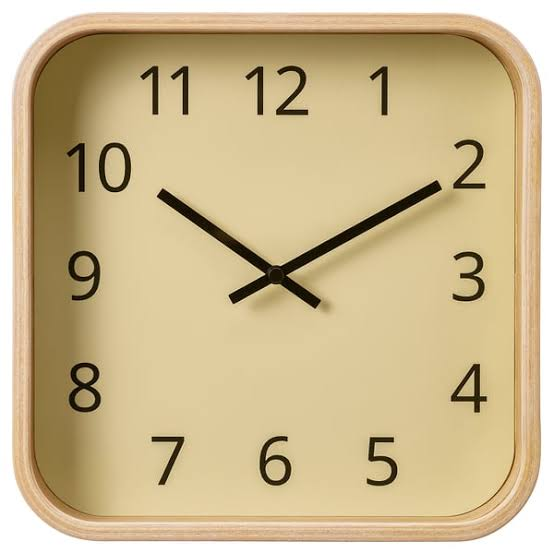

| Week | Day/Time | 12:00am | 1:00am | 2:00am | 3:00am | 4:00am | 5:00am | 6:00am | 7:00am | 8:00am | 9:00am | 10:00am | 11:00am | 12:00pm | 1:00pm | 2:00pm | 3:00pm | 4:00pm | 5:00pm | 6:00pm | 7:00pm | 8:00pm | 9:00pm | 10:00pm | 11:00pm |
|---|---|---|---|---|---|---|---|---|---|---|---|---|---|---|---|---|---|---|---|---|---|---|---|---|---|
| Weekdays | Monday | Sleeping | Waking up with breakfast and showering | Physical Science Class (8:30am-10:50am) | Lunch Break | Intermediate Algebra Class (1:00pm-3:20pm) | Going Home on the CNMI Transit Bus (3:30pm) | Relaxing and doing homework | Dinner | Playing video games | Going to bed | Sleeping | |||||||||||||
| Tuesday | Sleeping | Waking up for breakfast and showering | Business Communication Class (9:00am-10:50am) | Going Home on the CNMI Transit Bus (11:30am) | Lunch | Afternoon nap | Eating snacks | Homework and studying | Dinner | Watching anime | Going to bed | ||||||||||||||
| Wednesday | Sleeping | Waking up for breakfast and showering | Physical Science Class (8:30am-10:50am) | Lunch Break | Intermediate Algebra Class (1:00pm-3:20pm) | Going Home on the CNMI Transit Bus (3:30pm) | Relaxing & studying and doing homework | Dinner | Playing video games | Going to bed | Sleeping | ||||||||||||||
| Thursday | Sleeping | Waking up for breakfast | Homework and studying | Showering | Lunch (11:30am-12:30pm) | Quick nap (1:00pm-2:30pm) | Going to school for Web Design & Programming (3:30pm-5:50pm) | Preparing for church | Church Worship Service (7:00pm-9:00pm) | Going home and going to bed | Sleeping | ||||||||||||||
| Friday | Sleeping | Waking up for breakfast | Playing video games | Lunch | Afternoon nap | Eating snacks | Homework and studying | Dinner (7:00pm-7:30pm) | Church Meeting (8:00pm-9:00pm) | Watching INCRadio Micronesia (9:30pm-10:00pm) | Going to bed (10:30pm) | ||||||||||||||
| Weekend | Saturday | Sleeping | Waking up for breakfast | Church Household Visitations | Drawing art | Showering and lunch | Afternoon nap (1:00pm-3:30pm) | Eating snacks | Homework and studying | Dinner | Homework and studying | Going to bed | Sleeping | ||||||||||||
| Sunday | Sleeping | Waking up for breakfast (5:00am-5:20am) | Showering and preparing for worship service | Church Worship Service (7:00am-8:00am) | Church Children's Worship Service (9:00am-10:00am) | Going home and eating lunch | Afternoon nap (12:00pm-3:45pm) | Eating snacks | Homework and studying | Dinner (7:00pm-7:30pm) | Homework and studying | Going to bed and sleeping | |||||||||||||
| This is the end of my weekly schedule. | |||||||||||||||||||||||||